산업마다 오염물과 기재, 설비 조건이 다릅니다.
각 산업의 주요 세척 대상과 적용 방법을 확인해보세요.
드라이아이스 세척은 모든 산업에 하나의 방식으로 적용되지 않습니다.
오염물의 특성과 세척 대상의 재질, 설비 구조와 작업 환경, 원하는 결과에 따라 적합한 세척 조건과 적용 방법은 달라집니다.
각 산업을 선택하면 실제 생산 현장에서 무엇을 세척하는지, 어떤 오염물이 문제가 되는지, 드라이아이스 세척이 어떻게 활용되는지 확인할 수 있습니다.
드라이아이스 세척은 자동차와 반도체부터 식품, 발전, 플랜트, 운송산업까지 다양한 생산 및 산업 현장에 적용됩니다.
각 산업마다 오염물, 세척 대상, 설비 구조와 공정 조건이 다릅니다. 해당 산업을 선택하면 주요 세척 대상과 적용 포인트를 상세 페이지에서 확인할 수 있습니다.

금형 · 용접 셀 · 도장라인 · 다이캐스팅
사출·고무 금형부터 용접 로봇과 치구, 도장설비, 다이캐스팅 툴링까지 자동차 생산공정 전반의 세척과 유지보수에 적용됩니다.
솔루션 보기 →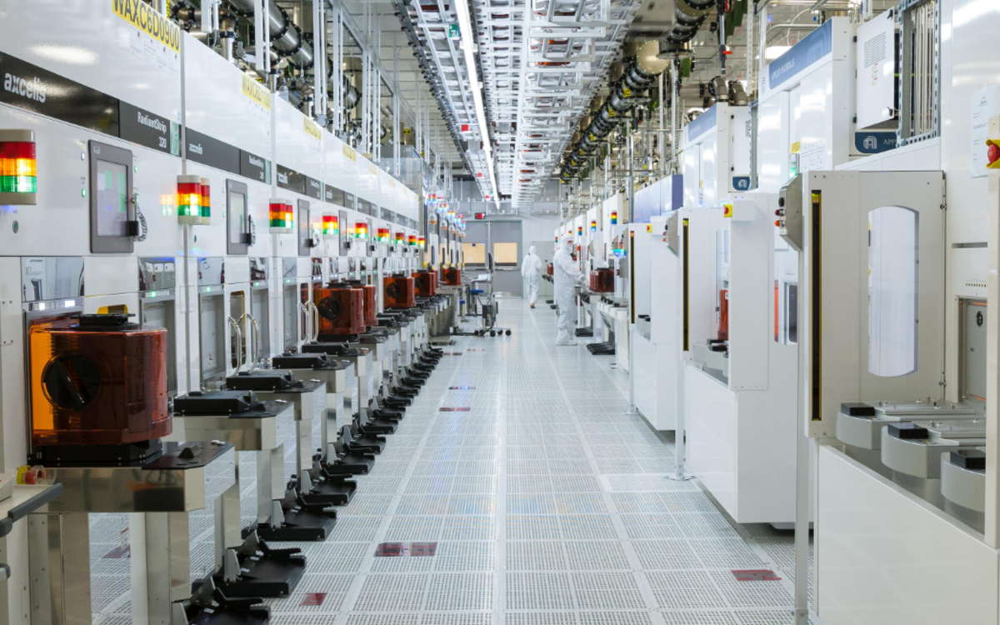
웨이퍼 공정 · CVD · 증착 툴링 · 진공펌프 · 이온주입기
웨이퍼 챔버와 공정 툴링의 미세 입자·오일·분진·연마제 잔류물 제거부터 반도체 몰딩 및 PCB 세정까지 정밀 세정에 활용됩니다.
솔루션 보기 →
사출금형 · 디플래싱 · 표면 전처리 · 복합재 툴링
이형제, 수지 오프가스와 경화 잔류물을 제거하고, 성형품의 디버링·디플래싱 및 도장·코팅 전 표면처리에도 적용됩니다.
솔루션 보기 →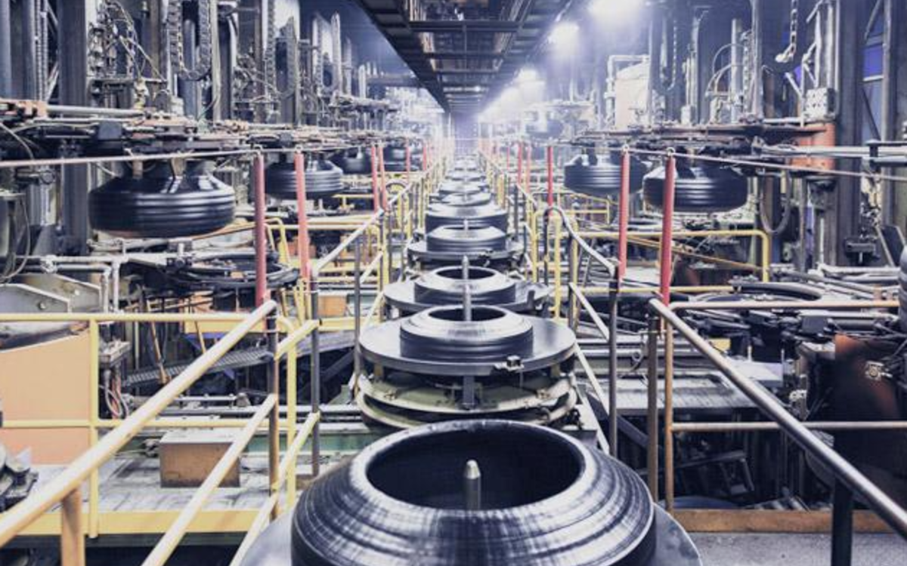
타이어 금형 · 가류기 · 고무 사출금형 · 압축금형 · 벤트
금형을 프레스에서 분리하지 않고 이형제와 카본, 가황고무 잔류물을 제거해 금형 상태와 제품 표면 품질을 유지합니다.
솔루션 보기 →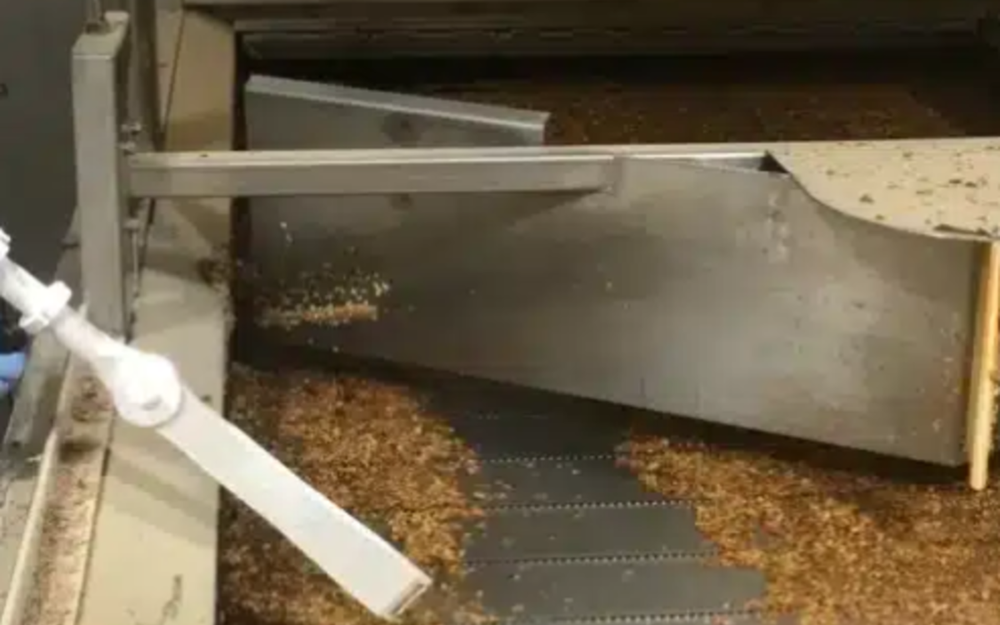
오븐 · 믹서 · 프라이어 · 컨베이어 · 포장설비
탄화 식품, 유지·지방, 설탕·시럽, 반죽과 생산 잔류물을 물과 화학세제 없이 제거하여 생산설비를 건식으로 세정합니다.
솔루션 보기 →
영구금형 · 코어박스 · 다이캐스팅 금형 · 주조설비
수지·바인더·이형제·내화 코팅과 다이 윤활제 등을 제거하면서 정밀한 금형면과 벤트의 형상을 보호합니다.
솔루션 보기 →
복합재 툴링 · 금형 · 접착제 제거 · 표면 전처리
항공용 복합재 금형과 생산 툴링의 수지·이형제·접착제를 제거하고, 부품 표면 전처리와 디버링에도 활용됩니다.
솔루션 보기 →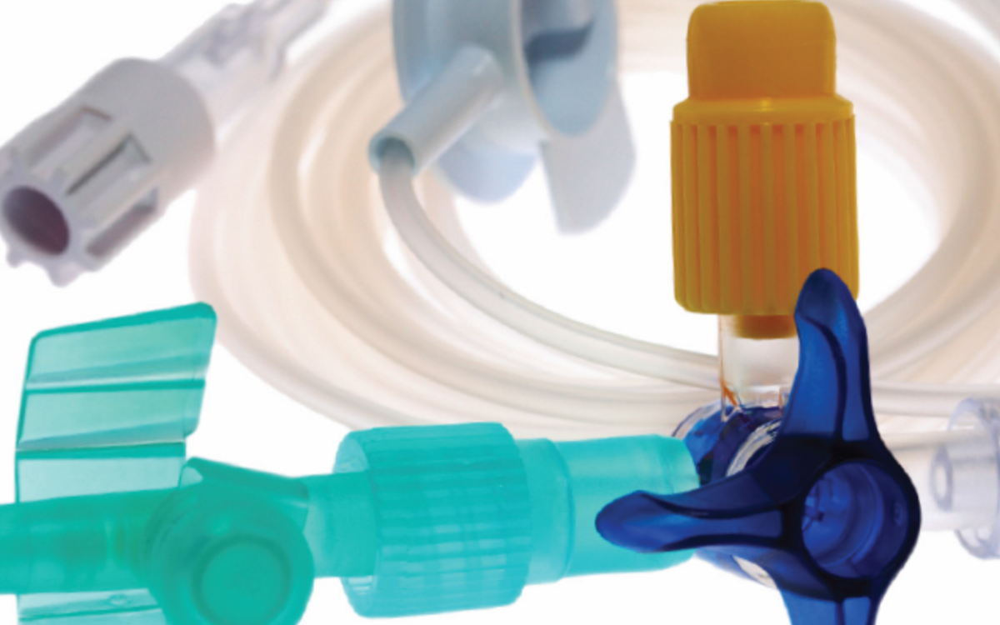
정밀금형 · 임플란트 · 스텐트 · 카테터 · 의료부품
의료용 금형 세척과 함께 임플란트, 스텐트, 카테터 팁 등 정밀 의료부품의 디버링·디플래싱 및 클린룸 제조공정에 적용됩니다.
솔루션 보기 →
터빈 · 발전기 · HRSG · 변압기 · 전기설비 · 원자력 · 제염
터빈과 발전기, 보일러·열교환 설비부터 권선·변압기·스위치기어까지 발전설비의 정비와 예방보전에 활용되며, 원자력 시설의 방사성 오염 제염에도 2차 폐기물 없이 적용됩니다.
솔루션 보기 →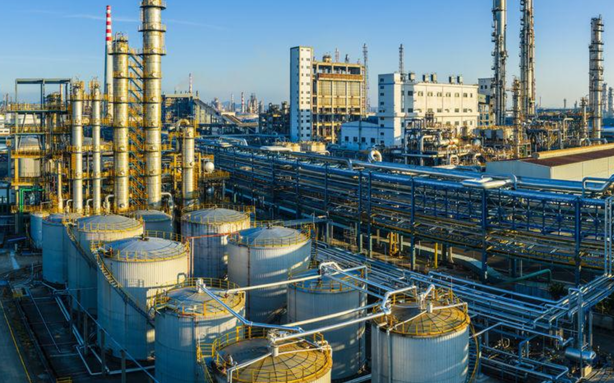
배관 · 탱크 · 열교환기 · 펌프 · 플랜트 설비
원유·중유, 역청, 파라핀, 카본과 염류 등 플랜트 오염물을 제거하고 점검·보수·재도장 전 표면 세정에 활용됩니다.
솔루션 보기 →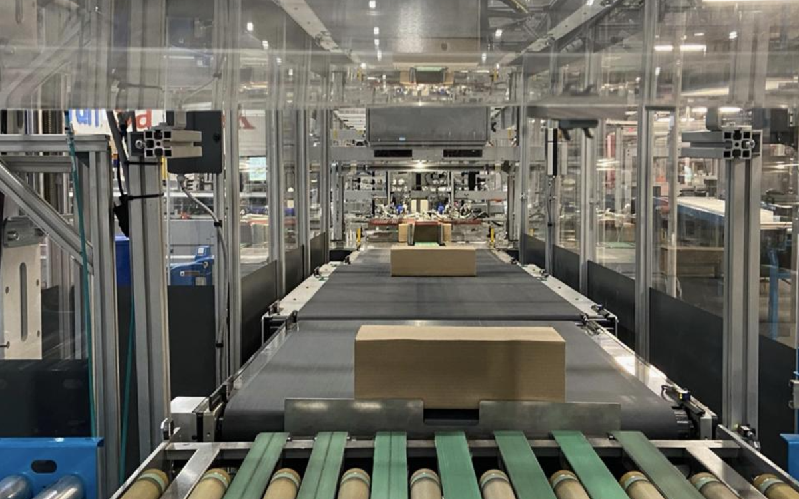
포장기 · 라벨러 · 접착제 노즐 · 컨베이어 · 실링설비
포장라인에 축적되는 접착제, 잉크, 바니시, 종이분진과 제품 잔류물을 제거해 라벨링·실링·이송설비를 관리합니다.
솔루션 보기 →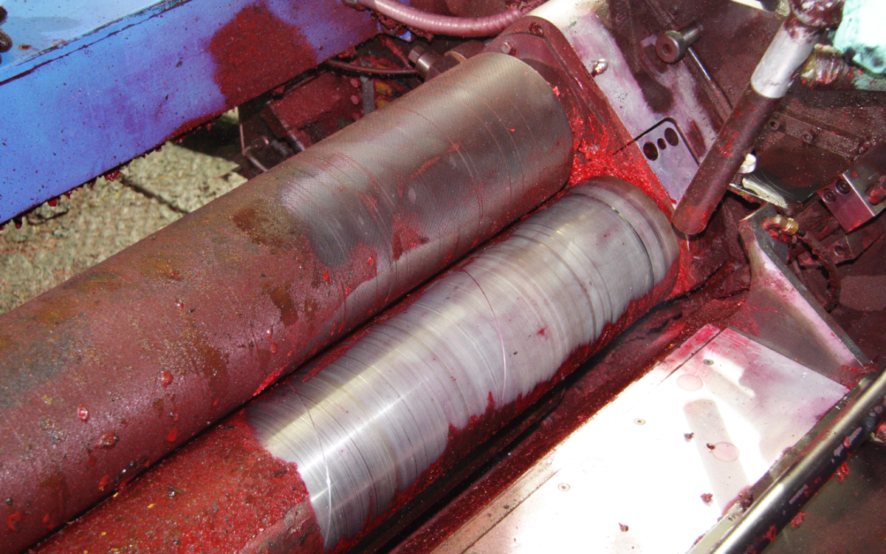
인쇄기 · 롤러 · 잉크 트레이 · 기어 · 피더
플렉소·그라비어·옵셋 등 인쇄설비의 경화 잉크, 그리스와 종이분진을 제거하면서 롤러와 정밀 구동부를 보호합니다.
솔루션 보기 →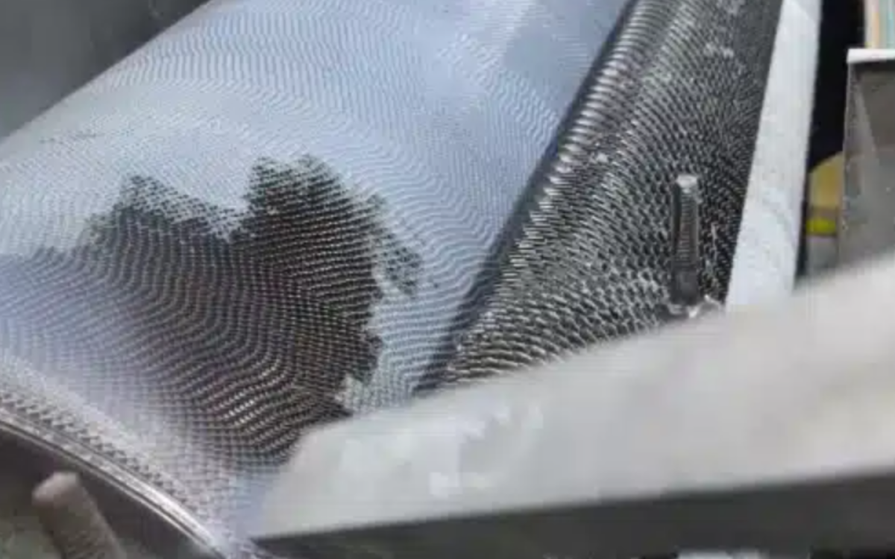
카딩기 · 방적기 · 직기 · 텐터 · 염색 롤러
섬유 비산물, 왁스·그리스, 라텍스, 접착제와 염료 잔류물을 제거하여 롤러와 직조·가공설비를 세정합니다.
솔루션 보기 →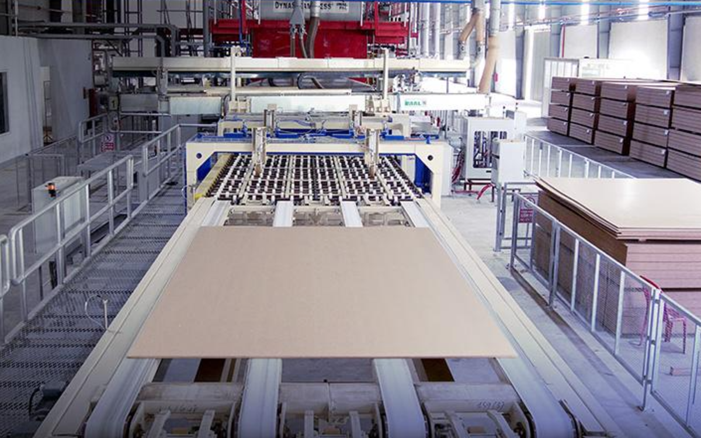
프레스 · 프레스 플레이트 · 건조기 · 접착제 도포설비
MDF·HDF·OSB 생산설비에 축적되는 접착수지, 피치, 목섬유와 미세분진을 제거하여 프레스와 생산라인을 유지관리합니다.
솔루션 보기 →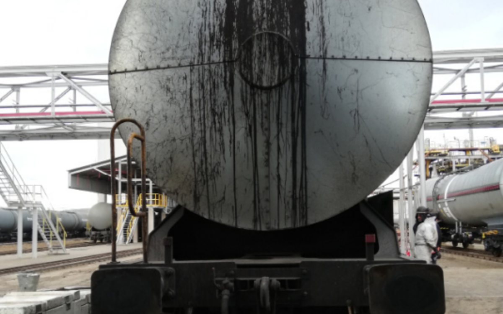
대차 · 차축 · 견인모터 · 제어반 · 전기설비
철도차량의 대차·휠셋과 기계부품부터 견인모터·제어반·절연설비까지 정비 세정에 적용해 차량 가동중단을 줄입니다.
솔루션 보기 →
크러셔 · 컨베이어 · 중장비 · 펌프 · 전기설비
채굴·선광·운송설비에 축적되는 광물분진, 오일·그리스와 카본을 제거하고 중장비 및 전기설비의 정비를 지원합니다.
솔루션 보기 →생산설비와 공장 인프라의 유지보수는 특정 산업에만 해당하지 않습니다.
컨베이어, 로봇, 모터, 열교환기, 제어반, 배관 및 각종 생산 지원설비처럼 거의 모든 제조현장에 공통으로 존재하는 설비도 드라이아이스 세척의 중요한 적용 대상입니다.
 CROSS-INDUSTRY · ALL PLANTS
CROSS-INDUSTRY · ALL PLANTS
제조산업뿐 아니라 전문 산업세척, 재해복구, 오염 제거 및 복원 작업에도 드라이아이스 세척이 활용됩니다.
생산공정이 아닌 현장 서비스와 복원 작업의 관점에서 적용 범위를 확인해보세요.
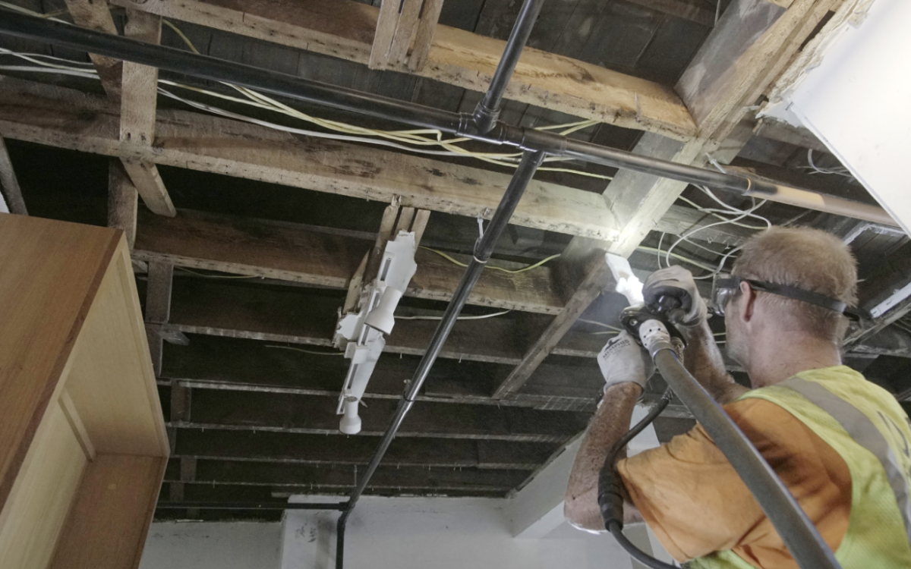
CONTRACT CLEANING전문 세척 서비스 산업설비 · 현장 세척 · 복원 · 전문 클리닝 서비스고객 현장의 설비와 오염 조건에 맞춰 산업세척, 유지보수, 복원·오염제거 작업을 제공하는 전문 서비스 분야입니다. 솔루션 보기 → 18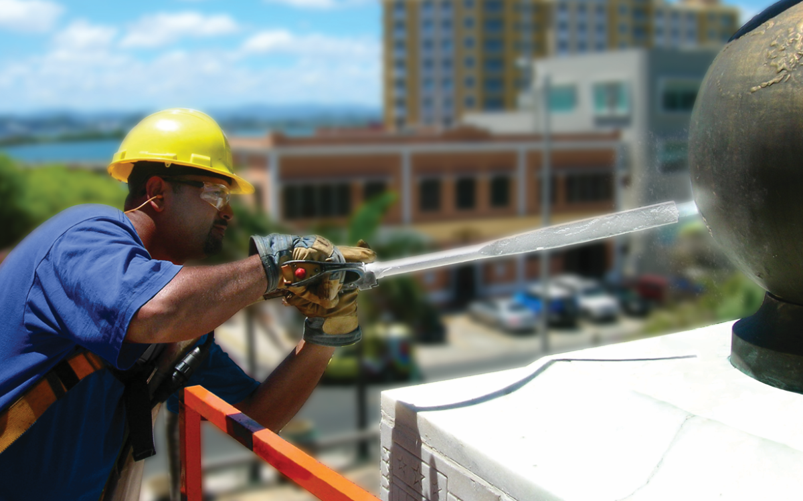
FIRE & WATER RESTORATION화재 · 수해 복원 그을음 · 탄화물 · 연기 오염 · 수해 손상 · 악취화재 후 숯·그을음과 냄새의 원인이 되는 잔류물을 제거하고, 수해·침수로 오염된 구조물의 복원 세정에도 활용됩니다. 솔루션 보기 → 19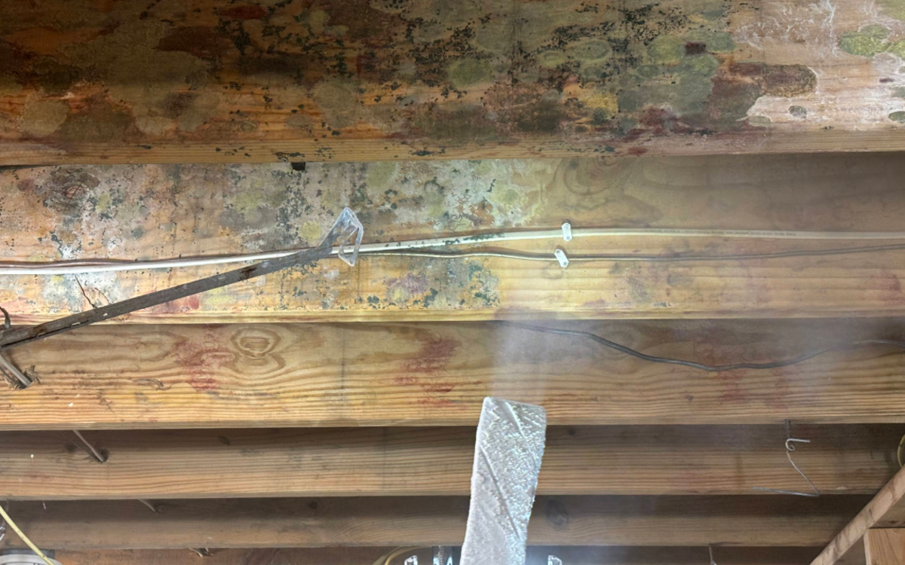
MOLD REMEDIATION곰팡이 제거 목재 구조물 · 다락 · 크롤스페이스 · 벽체 내부보와 장선, 못·배선 주변처럼 접근하기 어려운 곳의 곰팡이 오염을 물과 연마재 없이 제거하는 복원 공정에 활용됩니다. 솔루션 보기 → 20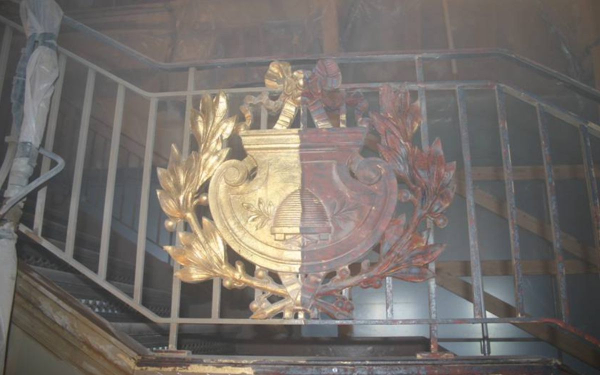
HISTORICAL RESTORATION역사적 건축물 · 문화재 복원 석재 · 벽돌 · 목재 · 금속 · 조형물 · 문화재오래된 건축물과 기념물, 박물관 유물의 오염·그을음·생물성 침착물을 제거하면서 원래 표면과 세부 형상을 보존합니다. 솔루션 보기 → 21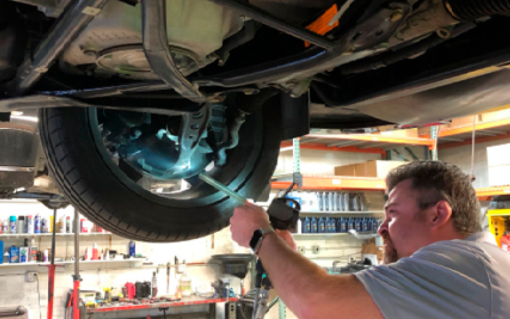
AUTOMOTIVE RESTORATION & DETAILING자동차 복원 · 디테일링 하부 · 엔진룸 · 휠하우스 · 섀시 · 정밀부품오일, 그리스와 도로 오염물을 제거하면서 도장면·고무·전기부품 등 차량의 원래 마감과 디테일을 최대한 보존합니다. 솔루션 보기 →자동차 공장 안에서도 사출금형의 이형제, 용접 지그의 스패터, 도장라인의 오버스프레이는 오염물도, 세척 대상도, 필요한 세척 강도도 서로 다릅니다.
따라서 드라이아이스 세척은 산업이나 장비 모델만 보고 결정할 수 없습니다. 바테크는 실제 오염물의 종류와 부착 정도, 세척 대상의 재질과 형상, 작업 환경과 원하는 결과를 확인한 뒤 실제 세척 테스트를 통해 적절한 세척 조건을 찾습니다.
장비를 먼저 고르는 것이 아니라,
세척 조건을 먼저 찾습니다.
사출금형이형제 · 수지 잔류
용접 지그Weld Spatter
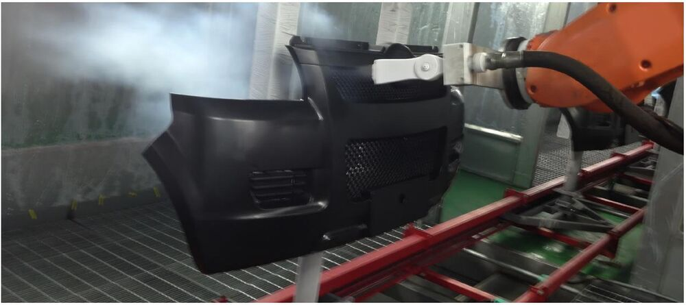
도장라인Paint Overspray오염물이 다르면 세척 조건도 달라집니다.
무엇을, 어디서, 어떤 상태로 닦아야 하는지부터 봅니다.

실제 오염물과 대상으로 직접 분사해 확인합니다.

닦이는 정도와 표면 영향, 작업성 사이의 균형을 맞춥니다.

확인된 조건에 맞는 장비와 작업 방식을 제안합니다.
세척 대상과 오염물, 현재 세척 방식을 알려주시면 실제 테스트를 통해 적용 가능성과 적정 조건을 함께 검토합니다.

드라이아이스의 물리적 특성부터 세척 원리와 장점, 세척 장비의 기본 개념까지 살펴봅니다.
자세히 보기 →
연마재·화학용제·고압세척 등 기존 방식과 드라이아이스 세척의 차이를 비교합니다.
자세히 보기 →
이물질 제거, 몰드 클리닝, 탈청, 도장 전처리 등 작업 유형별 적용 방법을 안내합니다.
자세히 보기 →
도입 전 검토사항부터 설치 준비, 운영 체크리스트까지 순서대로 안내합니다.
자세히 보기 →세척 대상과 오염물을 알려주시면 적용 가능성과 적정 조건을 안내합니다.